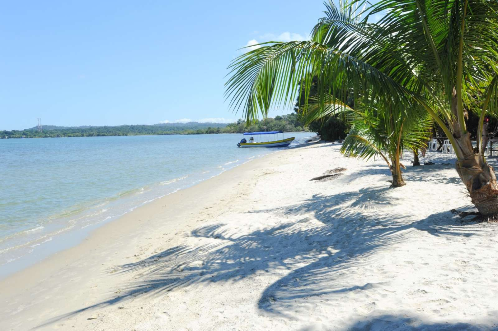
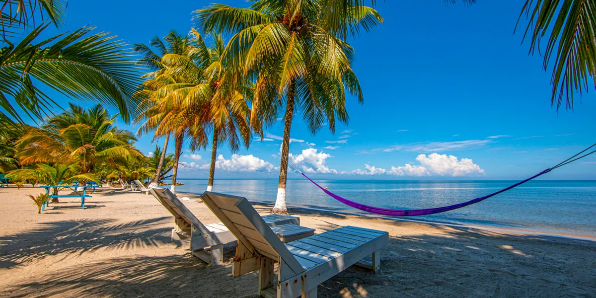
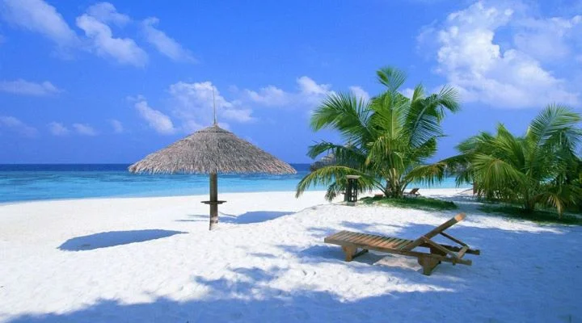

Desde hace muchos años, la zona fue utilizada por pescadores y comunidades cercanas como un lugar de descanso y pesca artesanal. Gracias a sus aguas tranquilas y belleza natural, comenzó a ser reconocida poco a poco por visitantes nacionales y extranjeros.
Playa Blanca es una de las joyas escondidas del Caribe guatemalteco. Su arena de color blanco marfil y sus aguas de un azul turquesa cristalino la convierten en un paraíso natural prácticamente virgen. Al estar alejada de zonas urbanas, ofrece una tranquilidad y belleza difícil de encontrar en otro lugar de Guatemala.
Natación, kayak, fotografía, picnic a orillas del mar, observación de aves costeras.


